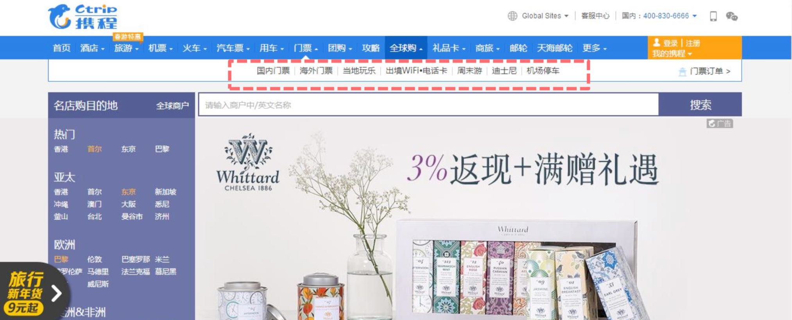
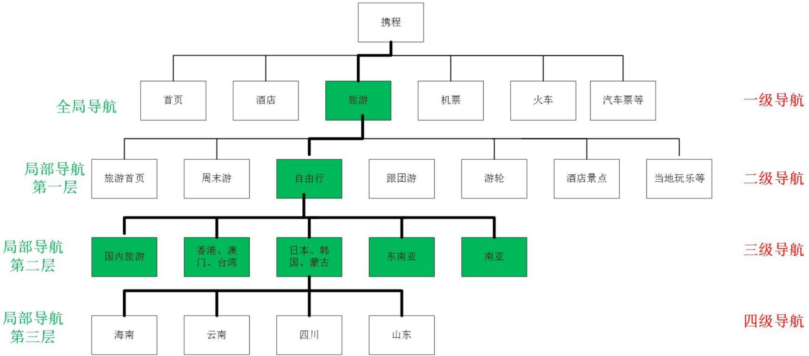

互联网产品面观


认识一个网站
网站页面结构 指存在于互联网上的所有网站页面结构样式，大体可分四类:
通栏式结构;
两栏式结构;
三栏式结构;
瀑布流结构(多应用于二级频道)

通栏式结构
两栏式结构
三栏式结构

瀑布流结构
网站导航
导航是网站的核心，能帮助用户快速的访问网站;通过导航可以 告诉用户在哪儿，又能带用户去那儿。导航可分为3类:
1、结构导航:可以帮助用户在web网站的组织结构中导航。
2、关联导航:将一个页面与包含类似内容的其他页面相关联。
3、可用性导航:与网站本身的内容无关，但这些元素可以帮助我们访问 网站(比如登录、搜索、注册、关于我们等)。

结构导航
结构导航表达了内容的层次结构。具体又可细分为全局导航和局部导航。
全局导航

全局导航系统即在网站的每一页都会显示的全域导航系统，
它通常是以每个页面顶端的导航栏形式来实现的。全局导航一般包括站点ID、 栏目、实用工具、搜索。

全局导航栏目的位置一般放在页面顶部，属于水平导航。但水平方向空间有限， 一般会采取更多( More )或折叠的方式。
全局导航栏目的位置除了在水平放置外，少数产品还会放置在页面的左侧。
全局导航也在不断的演变，页脚导航成为全局导航重要的设计模式。
局部导航
局部导航可帮助用户浏览更为特定的主体。局部导航也称为栏目导航，它提 供一组链接，可以帮助用户找到某个特定栏目中的内容。

局部导航有些放在页面顶部，和全局导航处于同一个水平条上;有的时候也 会放在页面左侧。
结构导航的层级根据网站具体情况而定，但是不要过多，单一业务的网站一 般2层导航即可;业务较为复杂的可多设置几层，比如携程。

结构导航的层级，以携程网站为例:

关联性导航
关联导航可以将一个页面与包含类似内容的其他页面相关联，他是跨越信息架构体系结构的快捷方式。关联导航解决的问题是:还有更好的东西吗?
关联性导航可通过以下几个维度展开:
1、按时间:在相同的时间段发表、保存的新闻或内容。
2、按类型:获取更多的内容，可以根据用户当前关注的类型进行关联。
3、个性化推荐:按用户的历史行为。
可用性导航
与网站本身的内容无关，但这些元素可以帮助我们访问网站。比如登录、搜索、 注册、关于我们、论坛、博客等。它解决的问题是快速的帮助我们访问网站。 也可以把可用性导航认为是全局导航中的实用工具。
导航访问模型

通过导航访问内容有两种基本模式:分别称为面包屑和蟹行。要通过网站的具体情况来选择正确的导航模型。
面包屑
面包屑的导航模型一般用在复杂层次结构的网站。 设计面包屑时应当注意:
1、把它放在最顶层
2、使用“>”对层级进行间隔
3、最后元素字数可省略表示
导航访问模型

蟹行
在蟹行模式中，用户可以采用一种横向方式在类别间移动，就好像螃蟹爬行 一样，可以选择页面上提供的“兄弟”类型的链接。
站点地图
属于辅助导航系统，也叫网站地图(stiemap)，适合层级结构复 杂的大型网站中，新站小站不需要做。用户更加全面的了解网站 的架构，内容，从而快捷的直观的找到他需要的内容，是对用户 友好的一个方式。
站点地图对于搜索引擎优化(SEO)来说，作用更大:
1. 为搜索引擎蜘蛛提供可以浏览整个网站的链接;
2. 为搜索引擎蜘蛛提供一些链接，指向动态页面或者其他方法比较难以到达的页面
网站广告
网站广告是很多站点主要的变现手段，广告位根据网站流量来算 的，流量越大，广告位越值钱;广告的位置显眼，价钱更高。在 产品设计中要结合业务，要预留广告位。
具体广告位形式可细分为:
Banner广告 按钮广告 通栏广告 文字广告 视频广告 弹出式广告 对联式广告

Banner广告位
Banner，也称横幅广告，是最早的网络广告形式，一般定位在网页首页、频 道、子频道等各级页面或文本页面的最上方。
按钮广告

按钮广告是表现为图标的广告，表现形式小巧，占用页面空间较小。
通栏广告
通栏广告出现在首页和较大的频道中，视觉冲击力较强，能引起浏览者的注意力。类似报纸杂志通栏广告。
文字链广告

文本链接广告是一种对浏览者干扰最少,具有较强的隐蔽性。
视频广告

类似于电视广告，声话具备，利于展示内容。
弹窗式广告

以弹窗的形式展现，容易让用户产生反感。
对联式广告
形如一副对联，悬挂页面两侧，具有较强的视觉冲击力

2、WEB端与移动端的差异
1、操作方式不同，Web鼠标，移动端点触
Web:滑动，左击，右击，双击 移动端:点击、滑动、双击、放大、缩小、3Dtouch
2、屏幕尺寸不同，分辨率不同
Web的尺寸:15英寸、17英寸、19英寸、20英寸
Web的分辨率:1366X768 1440x900 1600x900 1920x1080
移动端的尺寸:3.5英寸、4英寸、4.7英寸、5.5英寸
IOS分辨率:iPhone3分辨率320X480;iPhone4分辨率640x960;iPhone5分辨率 640x1136;iPhone6分辨率750x1334;iPhone6 Plus:1242x2208
安卓分辨率: 320X480 480X800 540X960 720X1280 1920X1080
3、网络环境不同
Web:稳定 移动端:不稳定(3G、4G等)
移动产品设计时要注重网络不稳定或无网状态下的情况。
4、软件迭代
Web端产品迭代比较容易，无需经过应用市场审核;
移动端需要应用市场的审核。对于用户来说，需要进行版本升级，体验并不好。

补充知识
IP地址:IP地址是用来唯一标识互联网上计算机的地址，让电脑之间可以相互 通信。每台连网计算机都依靠IP地址来互相区分、相互联系。分为公网IP和内网IP。
域名:由于IP地址是数字标识，使用时难以记忆和书写，因此在IP地址的基础上又发展出一种符号化的地址方案，来代替数字型的IP地址。每一个符号化的地 址都与特定的IP地址对应，这样网络上的资源访问起来就容易的多了。这个与网 络上的数字型IP地址相对应的字符型地址，就被称为域名
IP与域名的关系
域名和IP地址都是唯一的，但是他们二者的对应关系却有所不同。一个域名只 能对应一个IP地址，是一对一的关系，而一个IP却可以对应多个域名，是一对多的关系
一级域名:www.taobao.com;www.jd.com;
二级域名:www.ju.taobao.com(ju.taobao.com);sports.qq.com
三级域名:www.fans.sports.qq.com(fans.sports.qq.com)
从搜索引擎优化的角度来说，一级域名权重大于二级域名;二级域名大于三级

何为网址?
URL的俗称，一般分为3部分，例如:http://www.aaa.com/bb/cc/d.png
第一部分是协议部分“http://”,HTTP协议(HyperText Transfer Protocol), 全称是超文本传输协议，是互联网的基本协议。从字面意思我们可以理解为 通过该协议我们可以在互联网上传递除了文字以外的其他内容，例如网页、 视频、音频、图片等。
第二部分是资源所在的服务器的IP地址，“aaa.com”。为了识别方便，ip 地址通常被替换成域名。
第三部分是资源的具体路径，“/bb/cc/d.png” 也就是域名后斜杠的部分， 这部分内容和文件夹的层级结构类似，不同的结构间通过斜杠区分。

网址与域名的关系

网址=域名+具体路径(文件夹、文件名)

3、案例分享及实操
韩国NAVER、DAUM、NATE三大门户
通过韩国的最具有代表性的NAVER、DAUM、NATE三大门户网的设计， 从中了解首页布局，页面色彩应用，以及频道导航，页面模块处理等一些基础 设计，使得让我们更方便、直观的跟我们国内的门户做对比，了解国外网站的 流行趋势和风格把握。

页面布局/结构
频道导航规范
页面及字体颜色
图标应用
以上三个门户的中可以看到比国内的几个门户网的布局大不一样。韩国的 首页布局通常都是以简洁清晰、区块明显的的特点吸引用户。但这并不意味着内容上单一乏味。每家门户都是围绕着VI的标准色，其三家的设计风格都很接近，淡淡的背景，清晰的文字、直观的素材。
模块的处理
总结

以上是韩国的三大门户NAVER、DAUM、NATE的基础的设计中几个方面，我们从中了解了韩国的设计风格和规范的应用，充分体现出了少即就多的原则。
一位韩国优秀的产品PM曾说到:用户预览网站就像逛商场一样，商场不一定为 了大卖把所有商品堆积在顾客进门的大门口处，而更重要的是怎样让用户少走 一些弯路，买到更多自己满意的商品，这就需要一个清晰明了的设计和科学合理的布局。